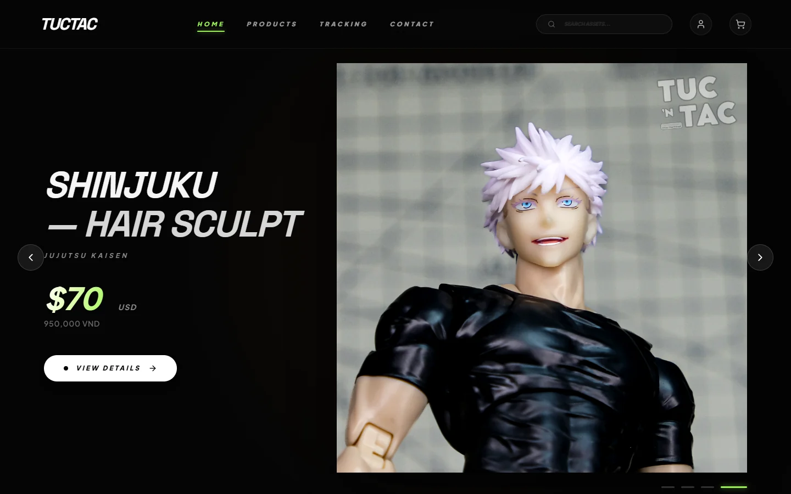
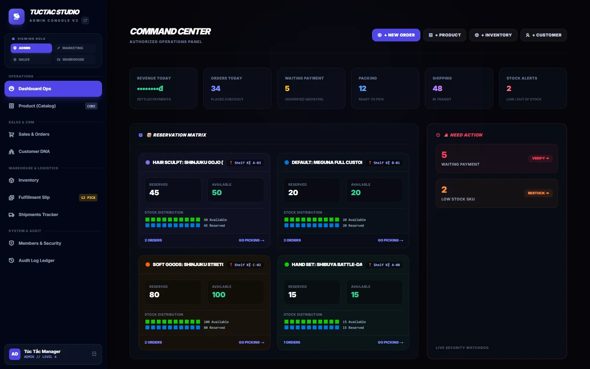
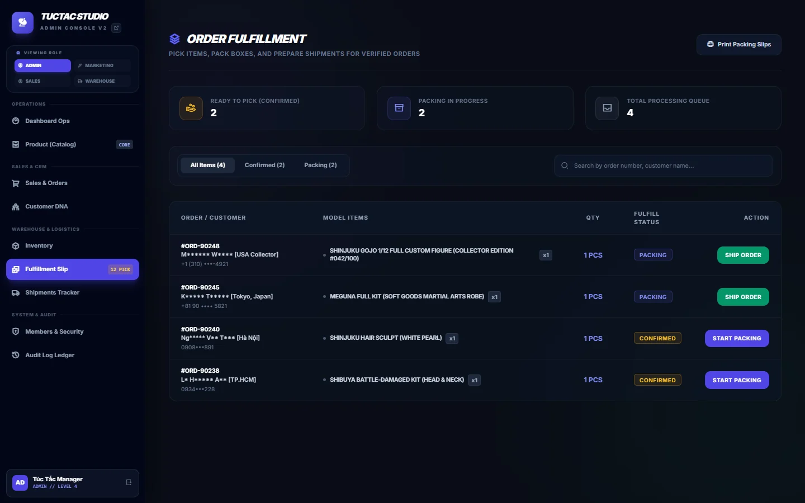

01
3D Viewer & AR
GLB assets render through model-viewer so collectors can rotate a sculpt in 360 degrees and preview compatible figures in augmented reality.
One commerce ecosystem connecting collectible craft, interactive product discovery, domestic and global checkout, scarce-drop allocation, warehouse fulfillment, and customer tracking.
Built for high-detail 1/12 art toys and global collectors.

TUCTAC Studio creates detailed 3D sculpts, resin accessories, soft goods, and full-custom 1/12 figures. Each limited drop introduces constraints that ordinary catalog software handles poorly: collector deposits, scarce slots, physical shelf coordinates, multi-currency payments, and cross-border fulfillment.
gndme designed the storefront and Admin Console as one closed system: discovery and payment on the outside, controlled reservation, production, picking, packing, shipping, and audit on the inside.
GLB assets render through model-viewer so collectors can rotate a sculpt in 360 degrees and preview compatible figures in augmented reality.
Vietnam orders receive dynamic VietQR payment details in VND, while international collectors check out through PayPal in USD.
Live viewer cues, countdown campaigns, bundles, coupons, loyalty tiers, and mobile gesture protection support high-intent product launches.
A public order lookup exposes production, packing, airway-bill, and shipment progress without requiring an admin conversation.
The Reservation Matrix assigns each deposit-backed slot by millisecond timestamp, locks stock, and maps inventory to physical shelf coordinates. Marketing, sales, and warehouse teams share the same operational state instead of rebuilding the launch from messages and spreadsheets.


The same order model supports domestic bank transfer and global card-funded PayPal checkout while preserving the currency and item price captured at purchase.
Four role-specific workspaces keep catalog, campaign, order, and warehouse actions separated. Operational authentication combines bcrypt-protected credentials with an internal session PIN.
Production data confirms that the Reservation Matrix kept scarce inventory controlled while the studio served a majority-international registered user base. Only portfolio-level operating aggregates are presented here; commercial and payment-detail data remain private.
The production ecosystem combines a responsive Next.js storefront, a dedicated operational console, FastAPI services, PostgreSQL persistence, and VPS delivery behind Nginx and HTTPS.